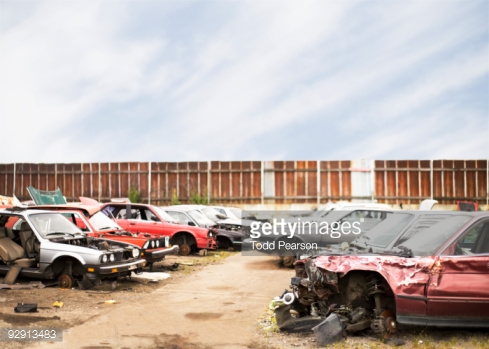
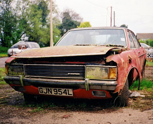

The issue of transportation and the environment is paradoxical in nature since transportation conveys substantial socioeconomic benefits, but at the same time transportation is impacting environmental systems.
From one side, transportation activities support increasing mobility demands for passengers and freight, while on the other, transport activities are associated with growing levels of environmental externalities.
This has reached a point where transportation is a dominant source of emission of most pollutants and their multiple impacts on the environment. These impacts fall within three categories.
- Direct impacts:The immediate consequence of transport activities on the environment where the cause and effect relationship is generally clear and well understood.

- Indirect impacts:The secondary (or tertiary) effects of transport activities on environmental systems.
They are often of higher consequence than direct impacts, but the involved relationships are often misunderstood and difficult to establish.
- Cumulative impacts:The additive, multiplicative or synergetic consequences of transport activities.
They take into account of the varied effects of direct and indirect impacts on an ecosystem, which are often unpredicted.